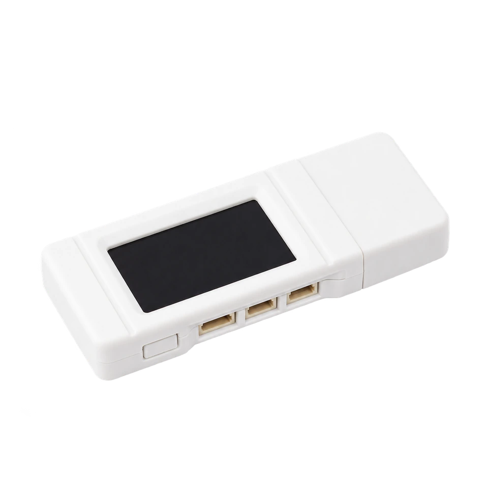

pinout and GPIO wiring
Waveshare ESP32-S3-GEEK
The ESP32 Bit Pirate toolkit in a pocket-sized USB device. The ESP32-S3RH2, 16 MB flash and 2 MB PSRAM sit alongside a color display, microSD slot and accessible connectors, ready for protocol exploration, USB adapters, wireless tools and hardware experiments.

wiring references
ESP32-S3-GEEK pinout and board photos
Four views for locating the connectors, checking the pin labels and planning your setup. Open an image for its full-size view.
compatibility
ESP32-S3-GEEK board overview
A USB-powered board in a 61 × 24.5 mm enclosure, with a removable USB cap and connections along the side.
practical tasks
ESP32-S3-GEEK supported workflows
Access the same range of ESP32 Bit Pirate workflows as other ESP32-S3 boards. These examples are starting points: explore the full protocol catalog, browser tools and recipes, then add the modules your task needs.
Work with serial buses, memory chips, sensors and target devices. Choose the mode and GPIO mapping that match your setup.
Turn the board into a dedicated USB adapter, capture signals, program devices or automate experiments from compatible tools.
Measure and generate signals, inspect GPIO activity and connect external modules for additional interfaces and peripherals.
Explore Wi-Fi, BLE and ESP SDR with the onboard radio, and extend the available radio workflows with supported external modules.
flash and connect
Install the ESP32-S3-GEEK firmware
Use the dedicated GEEK build so Bit Pirate configures the display, button and onboard peripherals correctly.
Remove the USB cap. Hold BOOT while plugging the GEEK into a USB-A port, then release BOOT. A USB data extension cable can make the button and connectors easier to reach.
Open Web Flasher in a supported browser, choose Waveshare ESP32-S3 Geek, connect to its USB port and install the firmware.
Unplug and reconnect without holding BOOT, then open Web Serial Terminal. Select the USB port and follow the terminal prompts.
Close other serial sessions before flashing. If the port changes when the firmware starts, select the new port in the terminal.
Pin mapping and wiring notes
The case labels identify the accessible signals: UART uses RX GPIO44 and TX GPIO43 with GND; I2C exposes SDA GPIO16, SCL GPIO17, 3V3 and GND; the separate GPIO connector exposes GPIO13, GPIO14 and GPIO6.
The three-pin GPIO connector has no ground pin. Use GND from the UART or I2C connector when attaching a target, and check connector orientation against the pinout photo before applying power.
Use the exposed connectors for experiments and leave the display, microSD and native USB signals assigned to the onboard hardware. BOOT is connected to GPIO0; hold it during power-up only when entering download mode.
GPIO signals use 3.3 V logic. USB supplies the board with 5 V but does not make the signal pins 5 V tolerant. Share ground with the target and use level shifting when needed.
useful pages
Protocols, tools and GEEK references
Choose a practical task or check the manufacturer’s connector pinout and schematic.
Explore Bit Pirate
Connect and configure
board-specific answers
ESP32-S3-GEEK FAQ
Firmware selection, USB startup, screen controls and connector wiring.
Which firmware should I choose?
Select Waveshare ESP32-S3 Geek in Web Flasher. For source builds, use the waveshare-s3-geek PlatformIO environment.
Which ESP32-S3 chip does the GEEK use?
Current Waveshare specifications name the ESP32-S3RH2; the older wiki names ESP32-S3R2. The documented GEEK configuration has 2 MB PSRAM and 16 MB external flash. Check the chip marking if you need to identify your hardware revision.
How do I enter download mode?
Unplug the board, hold BOOT while connecting USB, then release BOOT. After flashing, reconnect without holding BOOT to start Bit Pirate.
Can I use the onboard display and button?
Yes. The dedicated Bit Pirate GEEK build supports the display and BOOT button. A short press moves through choices and a longer press confirms. Use the USB terminal when a task needs text input.
Does the three-pin GPIO connector include ground?
No. Its pins are GPIO13, GPIO14 and GPIO6. Take GND from the UART or I2C connector and verify the case labels before wiring.
Can I connect 5 V UART or GPIO signals?
No. The signal pins use 3.3 V logic. Use suitable level shifting for a 5 V target and connect a common ground.

source project
ESP32-S3-GEEK in ESP32 Bit Pirate
Carry ESP32 Bit Pirate’s protocol modes, USB adapters and browser tools in a small USB device. Connect a target through the side ports and explore the full toolkit from the terminal.